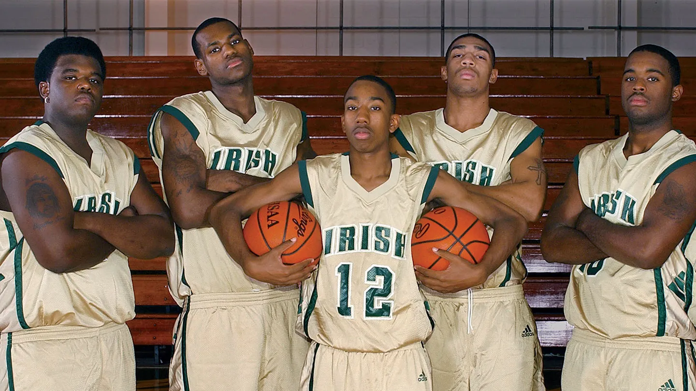

The Beginning
Here is a slider from Google's MDL:
LeBron James’ time at St. Vincent-St. Mary High School was not just about his individual brilliance, but also about the chemistry he shared with his close-knit group of teammates, known as the "Fab Five". This group, which consisted of LeBron and four of his best friends—Dru Joyce II, Sian Cotton, Wynston "Wyn" Bennett, and C.J. Murray—was a major part of the team’s success during their high school years. LeBron, already a highly regarded basketball prodigy, was the centerpiece of the team, but the Fab Five worked together as a cohesive unit, leading St. Vincent-St. Mary to three state championships during LeBron’s time there, in 2000, 2001, and 2003. LeBron's skill on the court was undeniable, but he often credited his teammates for helping him reach his full potential. Dru Joyce II, a talented point guard, played a crucial role in orchestrating the offense, setting LeBron up for countless assists and providing leadership on the court. Sian Cotton and Wyn Bennett, both strong and athletic forwards, provided the defense, rebounding, and scoring that helped balance the team. C.J. Murray, a guard, added depth to the backcourt and supported the ball-handling alongside Dru Joyce. Off the court, these guys were more than just teammates—they were brothers. The bond they shared was so strong that it was a major part of the team's success, as they all pushed each other to improve. While LeBron’s talent set him apart, the Fab Five were instrumental in creating a winning culture at St. Vincent-St. Mary. By the time LeBron graduated in 2003, he was already considered the best high school basketball player in the nation, and his team had earned national recognition. His high school years were a perfect blend of individual success and teamwork. LeBron's journey, which had begun with his difficult childhood, culminated in high school where he not only earned a diploma but solidified his legacy as a future NBA star. After high school, LeBron declared for the 2003 NBA Draft, where he was selected as the first overall pick by the Cleveland Cavaliers. His high school career, alongside the Fab Five, laid the foundation for his incredible journey to professional basketball greatness.
